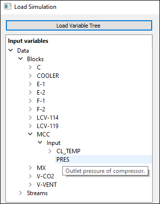

The “Load Simulation” tab¶
This is Metacontrol initial tab, where you will be able to
Supply an Aspen Plus simulation file;
Create aliases for the Aspen Plus simulation variables, to ease the study;
Select your relevant variables (Manipulated Variables, Controlled Variables and Auxiliary Variables);
Inspect information about the simulation you provided;
Create user-defined expressions for Objective functions, Constraints and CVs that are not natively calculated by the process simulator.
Metacontrol “Load Simulation” tab.¶
There are four main panels on this tab:
Load simulation file panel
Selected variables aliases panel
Functions definitions panel
Simulation info panel
Load simulation file panel¶
This is the panel that you will use to load the Aspen Plus simulation file.
Metacontrol “Load Simulation file” panel.¶
Providing a simulation file¶
Clicking on “Open File”, a window will appear in your screen and you will be able to point to your Aspen Plus file location on your PC.
Pointing to your Aspen Plus file Location.¶
Important
The supported Aspen Plus file extension is .bkp (Aspen Plus backup file). Please, save your simulation with this format before using Metacontrol.
Attention
Make sure the file supplied is not your only copy! We can not guarantee that any eventual use by the Metacontrol OLE/COM will not cause permanent modification, damage or corruption to your file.
Choosing your variables, and associating aliases for them¶
After pointing to your Aspen Plus simulation file location, the button “Load Variables” becomes active. After clicking on it, a screen to select simulation variables and adding aliases for them will appear. Just click on “Load Variable tree”, and the Aspen Plus engine will be loaded on background and all the variable tree will be loaded.
Loading Variables from Aspen Plus simulation.¶
After clicking “Load Variable tree” button, you will see that the variables from the simulation are available for use. They are neatly organized between Input and Output variables, and organized for each block and stream that you have modelled in Aspen Plus. If you want a specific variable, simply navigate using the loaded tree, and select it.
Selecting the loaded Variables from Aspen Plus simulation.¶
Important
If you hover you mouse pointer over a variable from the tree, Metacontrol will show the description of that variable.
A quick reminder of what that variable actually is…¶
On the screen above you noticed a red form over the alias and type forms. This is intentional: Metacontrol is informing you that two variables are with the same aliases and also, that you did not classified the type of the variables that you entered. Giving proper (non-repeated) aliases and correctly classifying your variables will make the red warning disappear.
Typing aliases for variables in Metacontrol.¶
classifying your variables in Metacontrol - Input Variables.¶
classifying your variables in Metacontrol - Output Variables.¶
Important
To create aliases in Metacontrol, only lower case alphanumeric characters are allowed.
If you forgot something from you model (a stream name, block, etc.), You can show the simulator GUI (Aspen Plus) by just checking the “Open Simulator GUI” checkbox on the upper right corner of the variable tree load window.
Forgot something (We do all the time)? Just call Aspen Plus from Metacontrol, and have a quick reminder.¶
After selecting, naming and classifying all the variables that you need, just click “Ok”, and you will be back on the main-screen.
Selected variables aliases panel¶
After selecting the necessary variables, you will see that now on the main tab, this panel reports a list of all variables from your study. This was created to make it easier for you to remember the aliases of the variables that you created and which type of variable you gave to each one of them (CV candidate, MV, Auxiliary).
At the “Load Simulation” tab, a list of all variables that you choose.¶
Functions definitions panel¶
On this panel, you can create user-defined variables, using the variables that you previously choose from your Aspen Plus model. This is really convenient because it allows you to:
Create the objective function that you will optimize in Metacontrol
Create constraints for your optimization problem
Create CV Candidates that are not natively calculated by the process simulator (A difference between variables, ratios, product, etc.)
The functions definition panel.¶
The Function definitions panel allow several math operations and functions:
Expression |
Definition |
|---|---|
+ |
Addition |
- |
Subtraction |
* |
Multiplication |
/ |
Division |
^ |
Potentiation |
PI |
PI constant |
E |
Euler’s number |
sin(x) |
Sine function |
cos(x) |
Cosine function |
tan(x) |
Tangent function |
asin(x) |
Arcsine function |
acos(x) |
Arccosine function |
atan(x) |
Arctangent function |
log(x) |
Natural Logarithm function |
log(x,base) |
Logarithm function with specified base |
abs(x) |
Absolute value of a number |
ceil(x) |
Round up to the closest integer |
floor(x) |
Round down to the closest integer |
round(x) |
Round to the closest integer |
exp(x) |
Exponential function |
The functions definition panel also checks the spelling of your expressions. Missed a minus signal between two variables? Mistype the name of an alias? Metacontrol will indicate that to you, with a red color:
An example of an alias mistype (missing a “t” from “fco2out” alias).¶
An example of math mistype (Math operator missing between the two parts of the expression).¶
Correcting the spelling/operator errors, Metacontrol validates your expressions:
Valid expression becomes green!¶